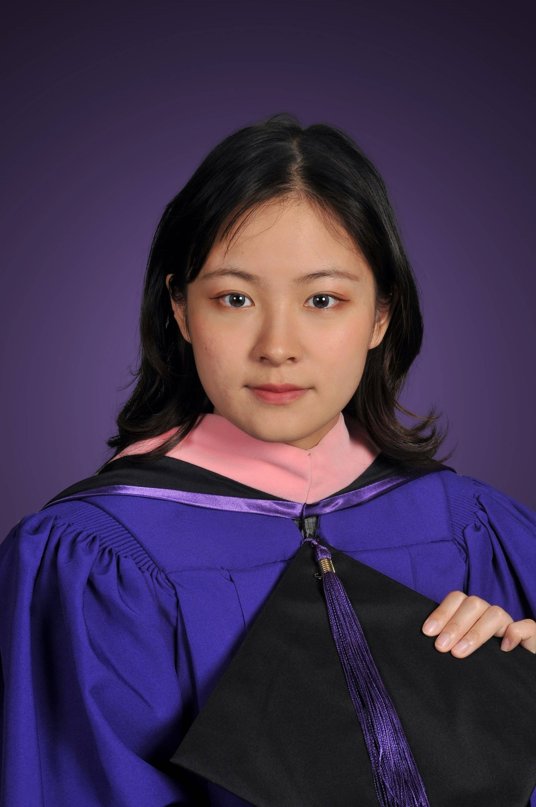

ABOUT
Carol Yan Li 李颜
Biography
Yan Li (Carol) is an award-winning sound designer, production sound mixer and re-recording mixer for films, video games and multimedia. She studied Film & Video (BFA) at the School of Visual Arts and Music Technology (MM) at New York University. During her studies, she trained with two Oscar-winning professors, Chris Newman (The Godfather, The Silence of the Lambs, Amadeus) and Tom Fleischman (Hugo, The Irishman, Shutter Island). She has worked in filmmaking since 2014 and in sound since 2016. Her work has been recognized at festivals and awards including Cannes, the Student Academy Awards, the Busan International Film Festival, and NYIFF. In 2021, she was a finalist for the Cinema Audio Society Student Recognition Award. In 2023, she received a game sound design scholarship from the Game Audio Diversity Alliance.
Carol is interested in all forms of art and media. She seeks to collaborate on projects with emotional depth, across formats. Her sound design adapts to different genres while building emotional connections.

Experience
- 2026 – now
Infinite Sound StudioHangzhou
Audio Editor & Sound Designer
- 2025
One Line StudioLos Angeles
Dialogue Editor & Audio QA
- 2024 – 2025
Crazy Maple Studio (ReelShort)Remote
Supervising Sound Designer
- 2019 – now
Freelance
Sound Designer & Re-recording Mixer
- 2018 – 2020
School of Visual ArtsNew York
Teaching Assistant to Chris Newman
Achievements
- 2021CAS (Cinema Audio Society) Student Recognition Award Finalist
- 2023GADA Game Sound Design Scholarship
- 2025New Jersey Film Awards — Best Sound Design (For Lila)
- 2025Shulong Cup Global AI Game & Application Innovation Competition — Best Audio Presentation nomination (Soul Turning)
- 2026Venice Immersive Competition, Venice International Film Festival (Ulrica)
Skills
- Engines & middleware
- Wwise, Unity, Unreal Engine (MetaSounds, Blueprints)
- DAWs & plugins
- Pro Tools, REAPER, iZotope RX, FabFilter Pro-Q 3 / Pro-C 2
- Synthesis & procedural
- Max/MSP, IRCAM Spat5, Phase Plant, Absynth 5, Massive, Suno AI
- Spatial audio
- Dolby Atmos, object-based mixing, 5.1 / 7.1 / 7.1.2 / 8-channel ring
- Languages
- Mandarin, English
Production sound equipment
- Recorder
- Sound Devices MixPre-6 II
- Boom mic
- Sennheiser MKH 416 + Sennheiser G4 wireless boom
- Lavalier
- Sennheiser G4 wireless × 2
RØDE Wireless PRO × 2 - Timecode
- Tentacle × 2
- Accessories
- Slate and accessories